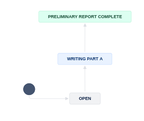

Preparing Part A - Preliminary Report#
Note
Link to JIRA: https://aeadataeditors.atlassian.net/jira (requires login).
Start the report#
To signal that you are starting the report, you will now transition the JIRA subtask to “Writing Part A”.

Prepare your working area#
Note
For Part A, you do NOT need the data, but you do need the working copy of the repository. It is not important what computer you prepare this part, you can do it on CCSS or your laptop.
Pull everything together#
Clone the Bitbucket repository onto the CCSS server you are working on
git clone https://yourname@bitbucket.org/aeaverification/aearep-xxx.git
Alternatively: If you have done the full Bash setup, you can run
aeagit xxxVerify that the code is present, i.e., that the automated scripts run during the Code Ingest worked. If they did not, you need to switch to the “Manual steps”!
From the JIRA issue, download and add Manuscript, Data and Code Availability Form (DCAF).
Download from Jira issue attachments. The manuscript is often called
PDF_Proof.pdf.
Warning
Occassionally, the email received from Manuscript Central will strip out the manuscript because it is too big. You will notice this because
There will be no
PDF_Proof.pdfattached!There is text that “the application was unable to attach manuscript files to this email, because one or more of the files exceeded the allowable attachment size (6MB). **
In this case, immediately contact the (assistant) Data Editor to obtain the correct manuscript! Do not use any other manuscript or working paper you might find online.
Add the manuscript, and any response by the authors (if a revision)
Add them to the Git repo
Be sure to
git pushit all to Bitbucket, with a meaningful commit message.git add PDF_Proof.pdf DataCodeAvailability.pdf git commit -m "added manuscript and DCAF" git push
If the automated population of the author’s code directory did not work, you will need to manually download the replication package. Try to do this first using scripts.
Consult the notes on downloading from other repositories
See repository-specific guidelines if the download is not from openICPSR.
Downloading using scripts
See the details in the appendix. You can do this on CCSS, BioHPC, or on Github CS.
Downloading using a browser
If you are still unsuccesful at this point, try this manual method (typically, on CCSS)
Download the code (and data) from openICPSR (typicaly for most cases). See details in the appendix for instructions on downloading these materials. Typically called
111234.zip.
Copy/paste the downloaded openICPSR ZIP file into the local copy of the
aearep-123repositoryThe ZIP file should be called something like
111234.zip. Note: it might look like a folder, but it is not! (on Windows)The ZIP file will be wherever your browser downloads materials - probably your
Downloadfolder.
Next manual steps
The local repository should now have the relevant LDI replication template materials and the openICPSR ZIP file containing the replication materials provided by the authors.
Unzip the openICPSR folder under a folder named for the openICPSR repostory number.
From bash:
unzip -n 111234.zip -d 111234
On Windows, right-click and select “Extract all”. When asked, do not overwrite files.
On OSX, double-click. When asked, do not overwrite files.
The individual files that are part of the replication package should now be in a subdirectory (e.g,
111234, the openICPSR repository number).Perform a
git add:git add 111234should do the right thing.
Add the manuscript, and any response by the authors (if a revision)
Add them to the Git repo
git add PDF_Proof.pdf DataCodeAvailability.pdf 111234 git commit -m "Adding manuscript, DCAF, and code" git push
If the pipelines did not split the report, use the
3-split-reportpipeline before proceeding.Then
git pullto get all the changes!
It is not recommended to do this step on BioHPC.
Be sure to use the REPLICATION-PartA.md for this section!
As part of the automated processing, the REPLICATION.md is split into two parts, REPLICATION-PartA.md and REPLICATION-PartB.md. Somebody else may be working on Part B at the same time as you are working on Part A. Please be sure to use the correct file for your work.
The root of the repository should contain only our files (i.e.,
REPLICATION-PartA.md,REPLICATION-PartB.mdetc.), the manuscript files (main manuscript, any online appendices and README files provided through the JIRA ticket), and the code.Example:
111234/ code-check.xlsx config.do PDF_Proof.PDF PII_stata_scan.do DataCodeAvailability.pdf REPLICATION-PartA.md REPLICATION-PartB.md REPLICATION.md
Verifying completeness of the README#
Now that you have pulled everything together, you will inspect the authors’ README, and do a first analysis of the necessary data.
The first section of the Replication report is titled “General”. Here you want to verify how complete the README is.
Go through the entire README, and compare both to the template README and the sections in the General section.
Check off the sections for which you appear to have information.
Leave blank the sections that are either not provided, or that are empty
In JIRA, identify the question called “
DCAF_README_compliant”.If all or most of the sections are in the same order, and are filled with meaningful information, then check
FullyIf information is provided, but in different order, or only mostly, mark “
Content only”.If very little of the information is provided, mark it as “
No”
List of Data Sources#
Now you will establish a list of data sources used.
Please check the Data and Code Availability Form.
The form should be attached in the JIRA ticket.
In area 2 of the screen, choose
DCAF.Open the Data and Code Availability Form, and check if all blanks are filled out.
Once you checked the form, and in particular, if the checkbox next to “README” is checked, choose “
Yes” from the dropdown menu ofDCAF_README_checkedcell.If the answer to the following question at the bottom of the form is “Yes”, then, choose “
Yes” from the dropdown menu ofDCAF_Access_Restrictions. Otherwise, choose “No”. “Is any of the data used in this manuscript subject to access restrictions?”
From the README provided by the authors, the data section of the article itself, or an appendix, establish a list of data sources used in the article. For each data source
write the corresponding
Data descriptionsection ofREPLICATION-PartA.md. This should provide detail about the datasetsIf data are cited, copy and past the citation to the replication report, clarify which one you are referring to. Be sure to check AEA Sample References and the additional guidance to be sure it is a data citation, and not a citation to an article or a document describing the data!
check any provided URL, and verify if there is a “Data Use Agreement”, “Citation requirement”, “License” on the web page. Check any such data use agreement for conditions. These may require that the authors cite a particular paper, or cite the data in a particular way (check this), or that the authors may not actually redistribute (provide) the data (check this!). If you have doubts, check with your supervisor.
Check that there is enough information to obtain the data in the README. Based on the README, you should be able to find, on the linked website, the data that you would need. (Ignore at this point that the data might be provided)
Add the list of data sources to the repository by committing the preliminary version of the
REPLICATION-PartA.md(git add,git commit,git push)Fill out the
DataCitationSummaryfield indicating how many data citations are in order:all,some, ornone.Fill out the
Data ProvenancesectionAre the data in the openICPSR repository, or are they someplace else? “Various” is a legitimate answer if data are in various locations.
Please refer to A guided walk through the Replication Report for more details about which data sources to include and how to assess the provided information.
Note
What is the difference between a “data source” and a “dataset” or “data file”?
A data source is more general. A data source may provide multiple data files. One example is the “Current Population Survey”.
A dataset or data file is a single file that appears in the replication package. An example is “
data_cps.dta”, which is presumably the data file containing the Current Population Survey.
For this section, you should list data sources.
Warning
When assessing the data, please take care to distinguish
data that is part of the openICPSR deposit
data that the README tells you to download or otherwise access
data that you are provided on the L-Drive, which is typically provided under an agreement with the authors, and cannot be redistributed.
Assess the openICPSR deposit#
If the data are in openICPSR, you will now assess the deposit. The form in the template report should give enough guidance on what to check!
Review the Part A report again#
At this stage, you go back and review the Part A report again. Identify any actions you think the author should make to bring the deposit into compliance with our requirements.
There is sample language for commonly encountered problems in the sample-language-report.md, which is part of the replication package.
Select an appropriate tag, and copy-paste into the
REPLICATION-PartA.md
Commit Part A to the Bitbucket repository.
git add REPLICATION-PartA.md
git commit -m "Preliminary report"
git push
Completing JIRA fields#
You are now ready to complete the subtask. In the transition screen, you will be asked to fill out the following fields:
DATA PROVENANCEWhere, specifically, are you accessing the data? Typically you can write here “openICPSR”, but it may also be a user-provided URL or DOI, or a different sourceif the data is in multiple places, enter “Multiple” here, and record the details in the REPLICATION.md
You can now proceed to change the status to Preliminary Report complete. You will be asked to provide additional information:
DATASETSINCLUDEDAre all datasets included as part of the replication package (on openICPSR or, if not using openICPSR, on the other repository)?DATAAVAILABILITYACESSDo the data require users to apply for access, purchase, or otherwise sign or enter into agreements to access the data? This could be a license agreement, or even a click-through acknowledgement. (This should be mentioned in the Readme PDF or in the article)DATAAVAILABILITYEXCLUSIVEAre there data that are only accessible to the author (nobody else)?REASON FOR NON-ACCESSIBILITY OF DATAFill this out for any data that is not accessible/ not included as part of this archive; check all that apply. This should be clear from the authors’ descriptions (in the README)Too big: The data can be accessed elsewhere, but they are too big for this replication packageApplication process: In order to access the data, an application needs to be made to an institution (not a purchase).Cost: It costs money to obtain the data. This may be because it has to be purchased, or because there is a fee for the application process.Confidential data: The data are sensitive / confidential and are therefore not made available in this replication package. They can be available elsewhere, subject to conditions.Proprietary data: The data “belong” to somebody - a company, or in rare cases, a specific author, and cannot be redistributed.Licensed data: A license must be obtained. This can be different than an application process (generally, less complicated).Redistribution not authorized: Often, even if data are not confidential, not proprietary, etc., there may be redistribution restrictions. An example are some IPUMS data, as well as many others.Other download site provided: When data can be downloaded elsewhere, possibly due tolicensesorapplication process. In other cases, even if they could be provided, they may already be archived elsewhere, and are not included here.Not found: This should be checked when data cannot be found as per the instructions by the author. This is rarely a final finding for pre-publication verification.
NUMBEROFDATASETSHow many datasets are used in the article (whether or not they are included in the replication package you downloaded)? This is meant to include datasets that you are asked to download, or that you were given access to via the “L:” drive, or “CRADC”, or some other secure mechanism.
Next steps#
You should now move the subtask to “Preliminary Report Complete” to signal that this part of the processing is done.